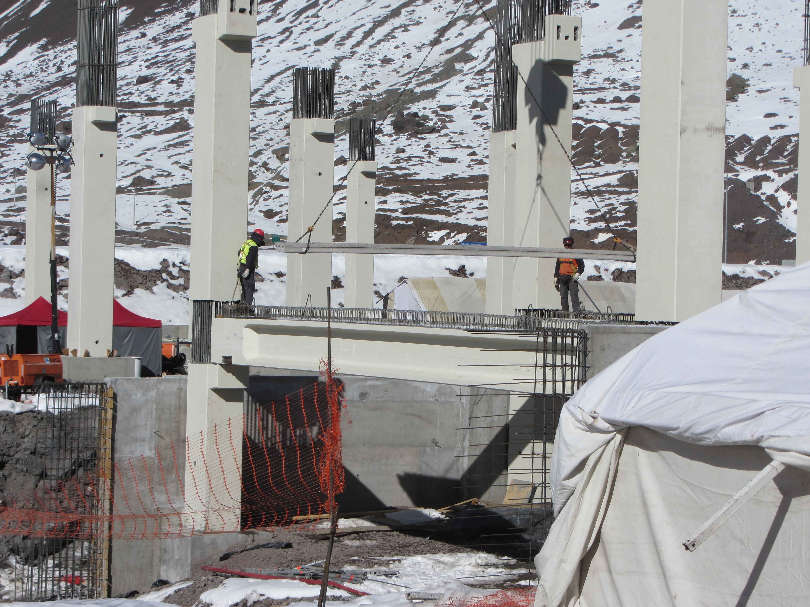
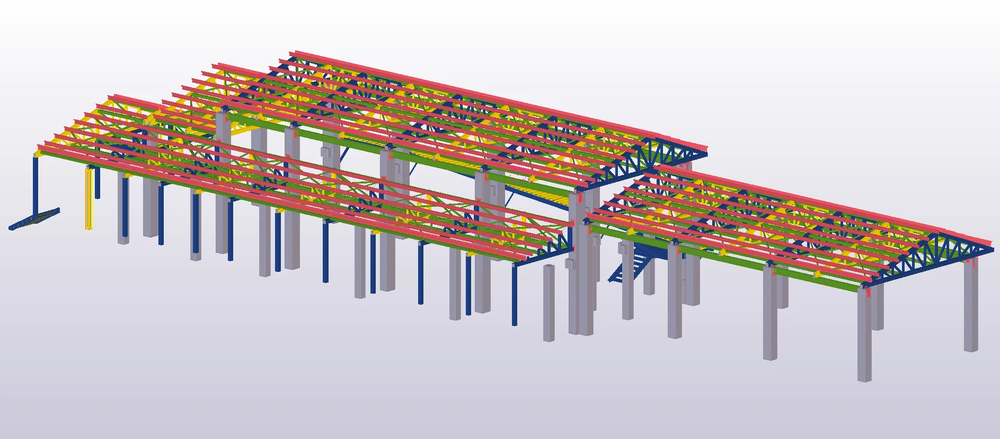
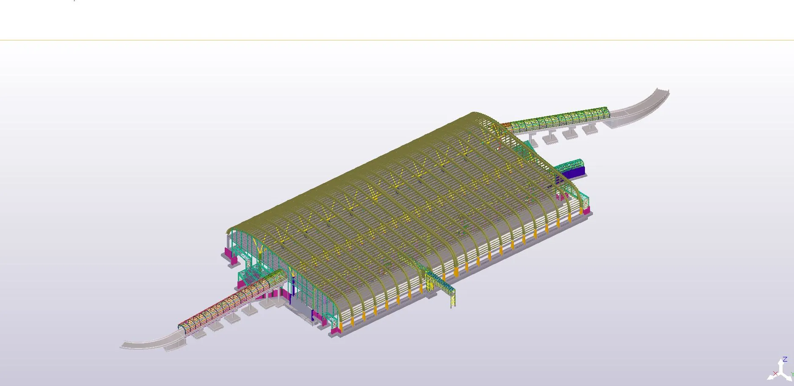
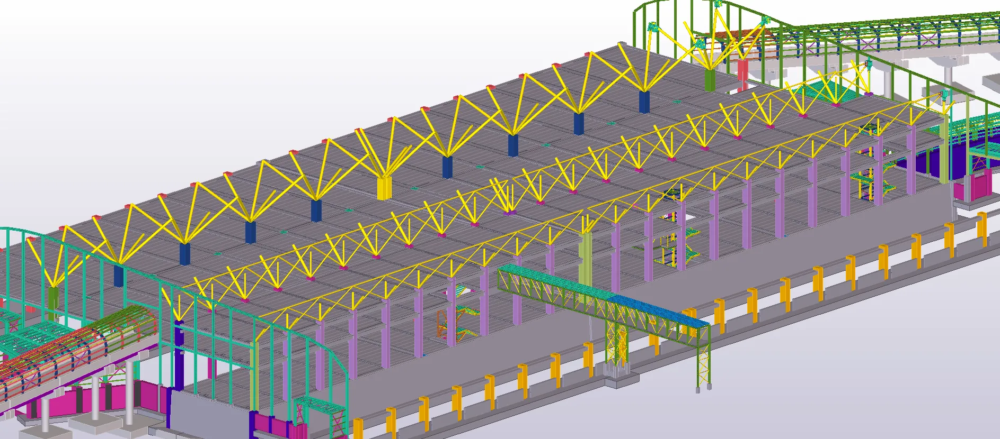

Ubicado a más de 3,200 metros de altura en la frontera entre Chile y Argentina, el nuevo Complejo Fronterizo Los Libertadores presentó desafíos únicos de ingeniería y logística. El proyecto consistió en el modelado de las estructuras principales capaces de soportar condiciones climáticas extremas y cargas de nieve significativas.
Se utilizó Tekla Structures para el detallamiento preciso de las estructuras de acero y hormigón, asegurando un montaje eficiente en un entorno de difícil acceso. La coordinación con Revit y Navisworks permitió integrar las instalaciones y garantizar la operatividad del complejo.


